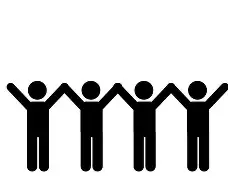

About Me
Hello my name is Diezel Paragon I goto York County School of Technology. I do track for the school, but also do boxing. For track I do sprints and pole vault. The colors I like are black, red, white, grey, and purple. I play video games in my free time. My favorite games to play are Rainbow Six Seige and Borderlands 3. I prefer xbox over playstation, I have a xbox series x. My favorite cars are Porsches and Dodge Challangers/Hellcats. When it comes to my work ethic, if you didn't do your best then it isn't good. One bad but good thing about me is my persaverance, it's hard for me to give up on things, espsially if I'm passionate about it. For example if I take an important test and didn't try my absolute best and hardest, then it makes me feel like no matter what I'll get a bad grade on it. Therefore mt work ethic is to always do your best, no matter the situation your in.
About Loved ones
My father, William Paragon, he is the man I learn many things from like how to act and also how to fix things around the house. He supports me and does his absolute best to raise me to be better than him. My Mother, Christina Paragon, is very supportive and doesn't mind helping if I need it. She looks for ways to impove me and make me better. She's harsh on me because she knows I can make it happen. My step-dad, Lydell Donavan-Green, always makes me better, he wants me to be confident and sure. He teaches me the most, he takes me boxing so I know I can protect myself and others. He always tells me to help him so I can learn many things and won't need to learn it by myself. My sisters, Alita and Teagan Paragon, even though we fight sometimes we all love eachother and help eachother if we need it. They are there wether I know it or not. My Grandpas, Wiliam Paragon and George Scrivens, they're always nice to me and help with advice. They show up to my Track meets to support me. My girlfriend Keilly Sosa, loves starbucks. She gets it nearly everyday, and her favorite drink is the Mango Dragonfruit Refresher with water. She also does track, she does throwing and jumps. Her favorite color is blue. She loves cute animals and has a bunny, hamster, and a kitten, the bunny is named Peanut while the hamspter is named Nugget, and the kitten is new and unamed. She is very loving and caring, she's always there when you need her. She is amazing and very beautiful.
